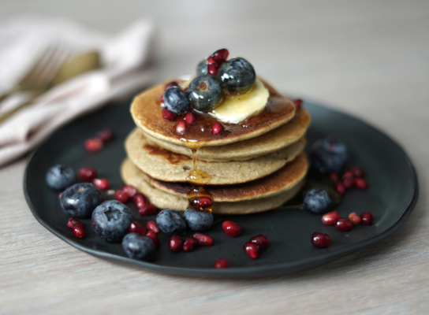

Ingredientes
- 1 taza de avena en hojuelas
- 1 banana madura
- 1 huevo
- 1/2 taza de leche (puede ser vegetal)
- 1 cucharadita de polvo de hornear
- 1/2 cucharadita de esencia de vainilla (opcional)
- Endulzante al gusto (opcional)
Instrucciones
- En una licuadora o procesador, coloca la avena, la banana, el huevo, la leche y el polvo de hornear.
- Licúa hasta obtener una masa homogénea. Si prefieres la masa más líquida, añade un poco más de leche.
- Calienta una sartén antiadherente a fuego medio. Puedes añadir un poco de aceite o manteca si lo prefieres.
- Vierte una pequeña cantidad de la masa en la sartén para formar los panqueques.
- Cocina cada panqueque por 2-3 minutos de cada lado, o hasta que estén dorados.
- Sírvelos con frutas frescas, miel, o el acompañante de tu preferencia.
